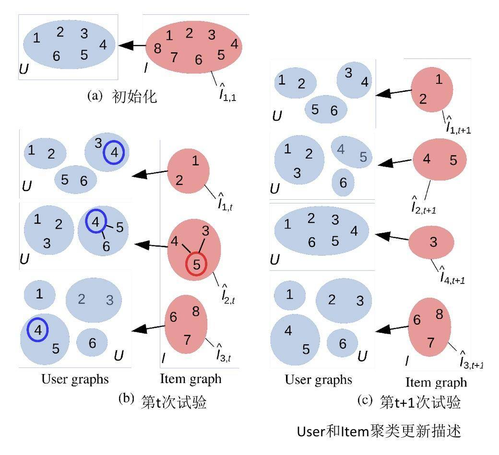
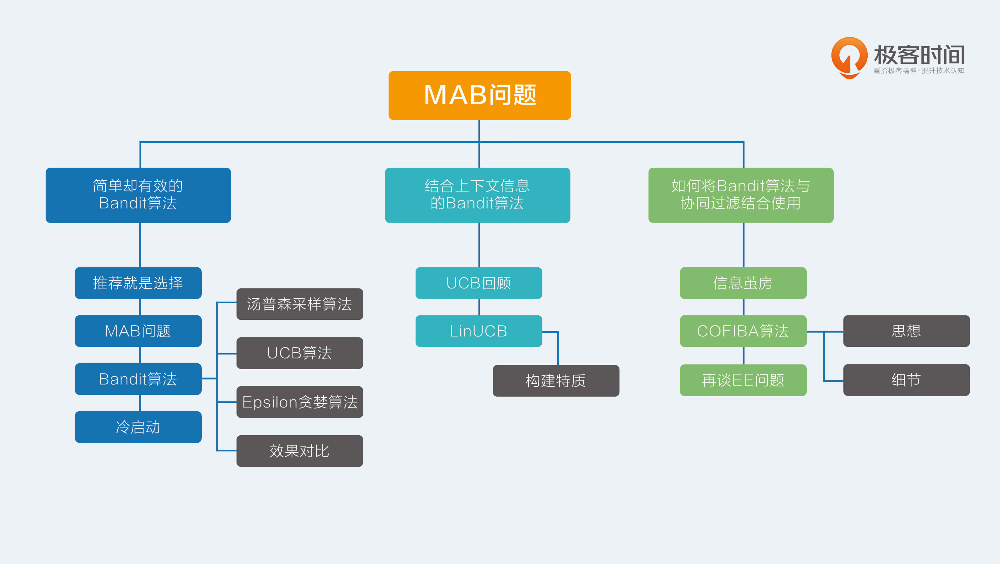

- 00 开篇词 用知识去对抗技术不平等.md.html
- 01 你真的需要个性化推荐系统吗_.md.html
- 02 个性化推荐系统有哪些绕不开的经典问题？.md.html
- 03 这些你必须应该具备的思维模式.md.html
- 04 画鬼容易画人难：用户画像的“能”和“不能”.md.html
- 05 从文本到用户画像有多远.md.html
- 06 超越标签的内容推荐系统.md.html
- 07 人以群分，你是什么人就看到什么世界.md.html
- 08 解密“看了又看”和“买了又买”.md.html
- 09 协同过滤中的相似度计算方法有哪些.md.html
- 10 那些在Netflix Prize中大放异彩的推荐算法.md.html
- 11 Facebook是怎么为十亿人互相推荐好友的.md.html
- 12 如果关注排序效果，那么这个模型可以帮到你.md.html
- 13 经典模型融合办法：线性模型和树模型的组合拳.md.html
- 14 一网打尽协同过滤、矩阵分解和线性模型.md.html
- 15 深度和宽度兼具的融合模型 Wide and Deep.md.html
- 16 简单却有效的Bandit算法.md.html
- 17 结合上下文信息的Bandit算法.md.html
- 18 如何将Bandit算法与协同过滤结合使用.md.html
- 19 深度学习在推荐系统中的应用有哪些_.md.html
- 20 用RNN构建个性化音乐播单.md.html
- 21 构建一个科学的排行榜体系.md.html
- 22 实用的加权采样算法.md.html
- 23 推荐候选池的去重策略.md.html
- 24 典型的信息流架构是什么样的.md.html
- 25 Netflix个性化推荐架构.md.html
- 26 总览推荐架构和搜索、广告的关系.md.html
- 27 巧妇难为无米之炊：数据采集关键要素.md.html
- 28 让你的推荐系统反应更快：实时推荐.md.html
- 29 让数据驱动落地，你需要一个实验平台.md.html
- 30 推荐系统服务化、存储选型及API设计.md.html
- 31 推荐系统的测试方法及常用指标介绍.md.html
- 32 道高一尺魔高一丈：推荐系统的攻防.md.html
- 33 和推荐系统有关的开源工具及框架介绍.md.html
- 34 推荐系统在互联网产品商业链条中的地位.md.html
- 35 说说信息流的前世今生.md.html
- 36 组建推荐团队及工程师的学习路径.md.html
- 加餐 推荐系统的参考阅读.md.html
- 结束语 遇“荐”之后，江湖再见.md.html
- 捐赠
18 如何将Bandit算法与协同过滤结合使用
推荐系统中最经典的算法是什么？对，是协同过滤，你已经学会抢答了。
是的，协同过滤是推荐系统发展史上浓墨重彩的一笔，其背后的思想简单深刻，在万物互联的今天，协同过滤的威力更加强大。与其说协同过滤是一门技术，不如说是一种方法论，不是机器在为你推荐，而是“集体智慧”在为你推荐。
协同过滤生动地诠释了什么是“物以类聚，人以群分”，你的圈子决定了你能见到的物品，这一点在前面的专栏中已经详细讲过了。但是这背后隐藏了一个重要的问题：是不是会存在信息茧房的问题？
信息茧房
其实作为一名对推荐系统略懂一二的普通海淀群众，我个人就会时常担心，是不是还能看到新的东西，是不是有惊喜。时不时乱点一通，是不是叉掉所有的推荐，让物品的推荐系统崩溃一下，这一切就是为了避免进入信息茧房，在眼前的圈子里苟且。
那么作为推荐系统的开发者，是不是应该做点什么呢？是的，在技术上，Bandit算法就是一个权衡探索和利用的好方法。如果把它结合传统的协同过滤来做推荐，那么在一定程度上就可以延缓信息茧房的到来，偶遇诗和远方。
我已经和你聊了两篇关于Bandit算法的内容，我介绍过普通的Bandit算法，也介绍过加入特征信息的LinUCB算法，今天，我要介绍的是一个新方法，如何结合协同过滤的群体智慧，与Bandit的走一步看一步一起，让两种思想碰撞，也许可以让你的推荐系统与众不同。
这就是2016年有人提出的COFIBA算法，下面我就开始与你聊聊这种算法。
COFIBA算法
1 思想
很多的推荐场景中都有两个规律。
相似的用户对同一个物品的反馈可能是一样的。也就是对一个聚类用户群体推荐同一个item，他们可能都会喜欢，也可能都不喜欢，同样的，同一个用户会对相似的物品反馈也会相同。这实际上就是基于用户的协同过滤基本思想。
在使用推荐系统过程中，用户的决策是动态进行的，尤其是新用户。这就导致无法提前为用户准备好推荐候选，只能“走一步看一步”，是一个动态的推荐过程。这是Bandit的算法基本思想。
每一个推荐候选物品，都可以根据用户对其偏好的不同，将用户分成不同的群体。
然后下一次，由用户所在的群体集体帮他预估可能的收益及置信区间，这个集体就有了协同的效果，然后再实时观察真实反馈，回来更新用户的个人参数用于下次调整收益和置信区间，这就有了Bandit的思想在里面。
举个例子，如果你的父母给你安排了很多相亲对象，要不要见面去相一下？那需要提前看看每一个相亲对象的资料，每次大家都分成好几派，有说好的，有说再看看的，也有说不行的。
你自己也会是其中一派的一员，每次都是你所属的那一派给你集体打分，因为他们是和你“三观一致的人”“诚不欺我”；这样从一堆资料中挑出分数最高的那个人，你出去见TA，回来后把实际感觉说给大家听，同时自己心里的标准也有些调整，重新再给剩下的其它对象打分，打完分再去见，
如果要推荐的候选物品较多，需要对物品聚类，就不用按照每一个物品对用户聚类，而是按照每一个物品所属的类簇对用户聚类，如此一来，物品的类簇数目相对于物品数就要大大减少。
2.细节
基于上述的思想，COFIBA算法要点摘要如下。
- 在时刻t，有一个用户来访问推荐系统，推荐系统需要从已有的候选池子中挑一个最佳的物品推荐给他，然后观察他的反馈，用观察到的反馈来更新挑选策略。
- 这里的每个物品都有一个特征向量，所以这里的Bandit算法是context相关的，只不过这里虽然是给每个用户维护一套参数，但实际上是由用户所在的聚类类簇一起决定结果的。
- 这里依然是用岭回归去拟合用户的权重向量，用于预测用户对每个物品的可能反馈（payoff），这一点和我们上一次介绍的LinUCB算法是一样的。
对比上一次介绍的LinUCB算法，COFIBA的不同有两个：
- 基于用户聚类挑选最佳的物品，即相似用户集体动态决策；
- 基于用户的反馈情况调整用户和物品的聚类结果。
整体算法过程如下。
在针对某个用户i，在每一次推荐时做以下事情。
- 首先计算用户i的Bandit参数W，做法和LinUCB算法相同，但是这个参数并不直接参与到选择决策中，注意这和LinUCB不同，只是用来更新用户聚类。
- 遍历候选物品，每一个物品已经表示成一个向量x了。
- 每一个物品都对应一个物品聚类类簇，每一个物品类簇对应一个全量用户聚类结果，所以遍历到每一个物品时，就可以判断出当前用户在当前物品面前，自己属于哪个用户聚类类簇，然后把对应类簇中每个用户的M矩阵(对应LinUCB里面的A矩阵)，b向量（表示收益向量，对应LinUCB里面的b向量）加起来，从而针对这个类簇求解一个岭回归参数（类似LinUCB里面单独针对每个用户所做），同时计算其收益预测值和置信区间上边界。
- 每个待推荐的物品都得到一个预测值及置信区间上界，挑出那个上边界最大的物品作为推荐结果。
- 观察用户的真实反馈，然后更新用户自己的M矩阵和b向量，只更新每个用户，对应类簇里其他的不更新。
以上是COFIBA算法的一次决策过程。在收到用户真实反馈之后，还有两个计算过程：
- 更新user聚类；
- 更新item聚类。
如何更新user和item的聚类呢？我在这里给出了一个示意图。

解释一下这个图。
（a） 示意图中有6个用户，8个物品，初始化时，用户和物品的类簇个数都是1。
（b）在某一轮推荐时，推荐系统面对的用户是4。推荐过程就是遍历1～8每个物品，然后在面对每个物品时，用户4在哪个类簇中，把对应类簇中的用户聚合起来为这个物品集体预测收益值置信上边界。这里假设最终物品5胜出，被推荐出去了。
在时刻t，物品一共有3个聚类类簇，需要更新的用户聚类是物品5对应的用户4所在类簇。
更新方式：看看该类簇里面除了用户4之外的用户，对物品5的预期收益是不是和用户4相近，如果是，则保持原来的连接边，否则删除原来的连接边。删除边之后相当于就重新构建了聚类结果。
这里假设新的聚类结果由原来用户4所在的类簇分裂成了两个类簇：4和5成一类，6单独自成一类。
（c）更新完用户类簇后，被推荐出去的物品5，它对应的类簇也要更新。
更新方式是：对于每一个和物品5还存在连接边的物品，假如叫做物品j，都有一个对这个物品j有相近收益预估值的近邻用户集合，然后看看近邻用户集合是不是和刚刚更新后的用户4所在的类簇相同。
是的话，保留物品5和物品j之间的连接边，否则删除。这里示意图中是物品3和物品5之间的连接边被删除。
物品3变成了孤家寡人一个，不再和任何物品有链接，独立后就给他初始化了一个全新的用户聚类结果：所有用户是一个类簇。
简单来说就是这样：
- 用协同过滤来少选可以参与决策的用户代表，用LinUCB算法来实际执行选择；
- 根据用户的反馈，调整基于用户和基于物品的聚类结果，即对物品和用户的群体代表做换届选举；
- 基于物品的聚类如果变化，又进一步改变了用户的聚类结果；
- 不断根据用户实时动态的反馈来调整用户决策参数，从而重新划分聚类结果矩阵。
COFIBA算法也很容易实现，GitHub上就有。原始论文也从理论和实验两方面都证明了它的有效性。
再谈EE问题
整个专栏的Bandit算法系列，主要是解决推荐系统中的冷启动和EE问题。探索和利用这一对矛盾一直客观存在，而Bandit算法是公认的一种比较好的解决EE问题的方案。
除了Bandit算法之外，还有一些其他的探索兴趣的办法，比如在推荐时，随机地去掉一些用户历史行为（特征）。
解决兴趣探索，势必要冒险，势必要面对用户的未知，而这显然就是可能会伤害当前用户价值的：明知道用户肯定喜欢A，你还偏偏以某个小概率给推荐非A。
实际上，很少有公司会采用这些理性的办法做探索，反而更愿意用一些盲目主观的方式。究其原因，可能是因为：
- 互联网产品生命周期短，而探索又是为了提升长期利益的，所以没有动力做；
- 用户使用互联网产品时间越来越碎片化，探索的时间长，难以体现出探索的价值；
- 同质化互联网产品多，用户选择多，稍有不慎，用户用脚投票，分分钟弃你于不顾；
- 已经成规模的平台，红利杠杠的，其实是没有动力做探索的。
基于这些，我们如果想在自己的推荐系统中引入探索机制，需要注意以下几点：
- 用于探索兴趣的物品，要保证其本身质量，纵使用户不感兴趣，也不至于引起其反感，损失平台品牌价值；
- 探索兴趣的地方需要产品精心设计，让用户有耐心陪你玩儿；
- 深度思考，这样才不会做出脑残的产品，产品不会早早夭折，才有可能让探索机制有用武之地。
总结
今天，我介绍完成了MAB问题和推荐系统之间的千丝万缕联系。Bandit算法是一种不太常用在推荐系统的算法，究其原因，是它能同时处理的物品数量不能太多。
但是，在冷启动和处理EE问题时，Bandit算法简单好用，值得一试。当然，这个专栏介绍的所有推荐算法都不是单打独斗最好，而是与其他算法结合使用才能相映生辉，Bandit算法亦是如此。
今天介绍的COFIOBA算法，原理很简单，就是把协同过滤思想引入到了Bandit算法中，不再是用户独立决策，而是用户所在的群体共同决策推荐结果。
这样比较问题，也可以加速收敛。不知道对你有没有启发呢？欢迎留言一起讨论。感谢你的收听，我们下次再见。

© 2019 - 2023 Liangliang Lee. Powered by gin and hexo-theme-book.